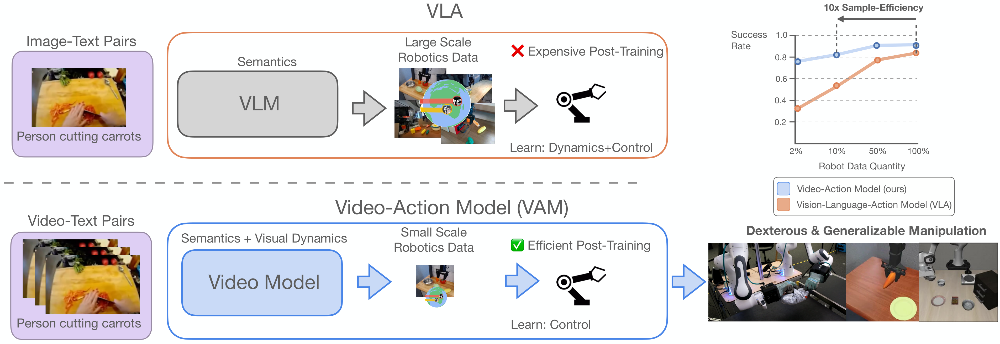
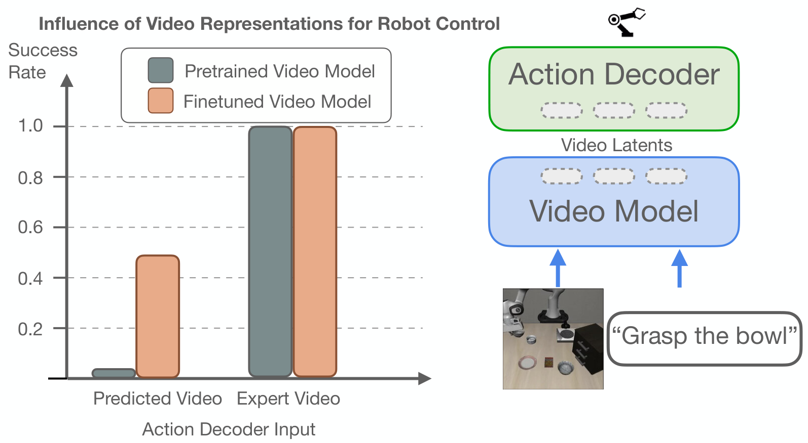
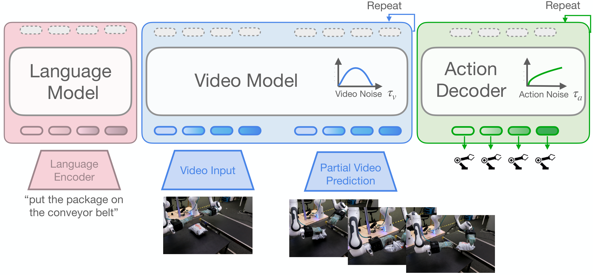
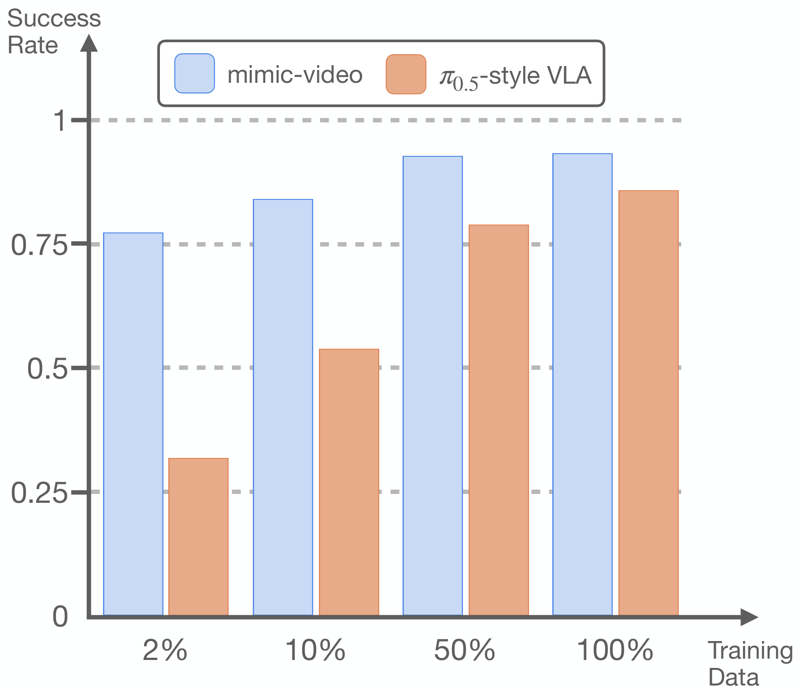
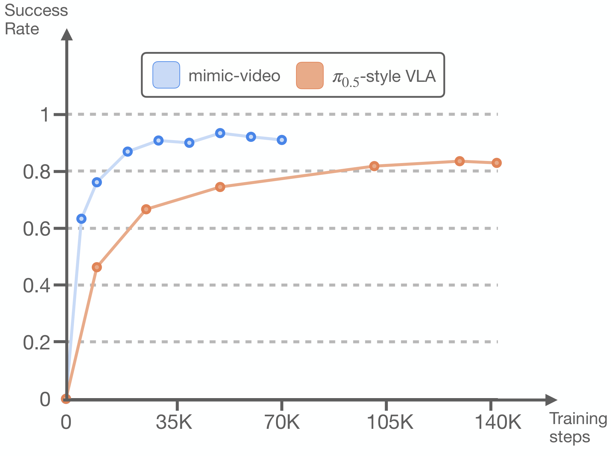
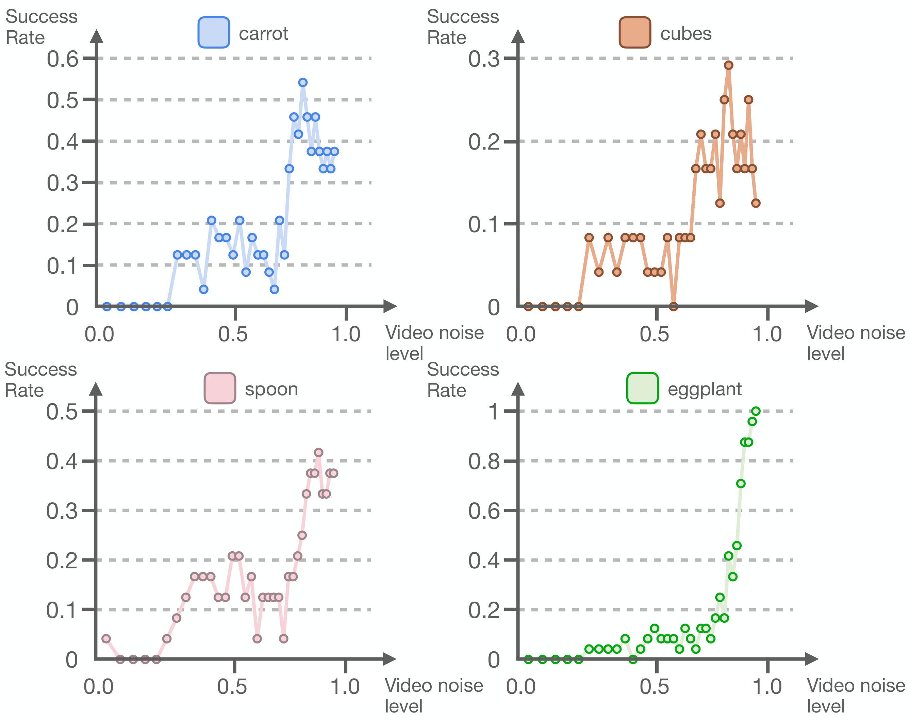
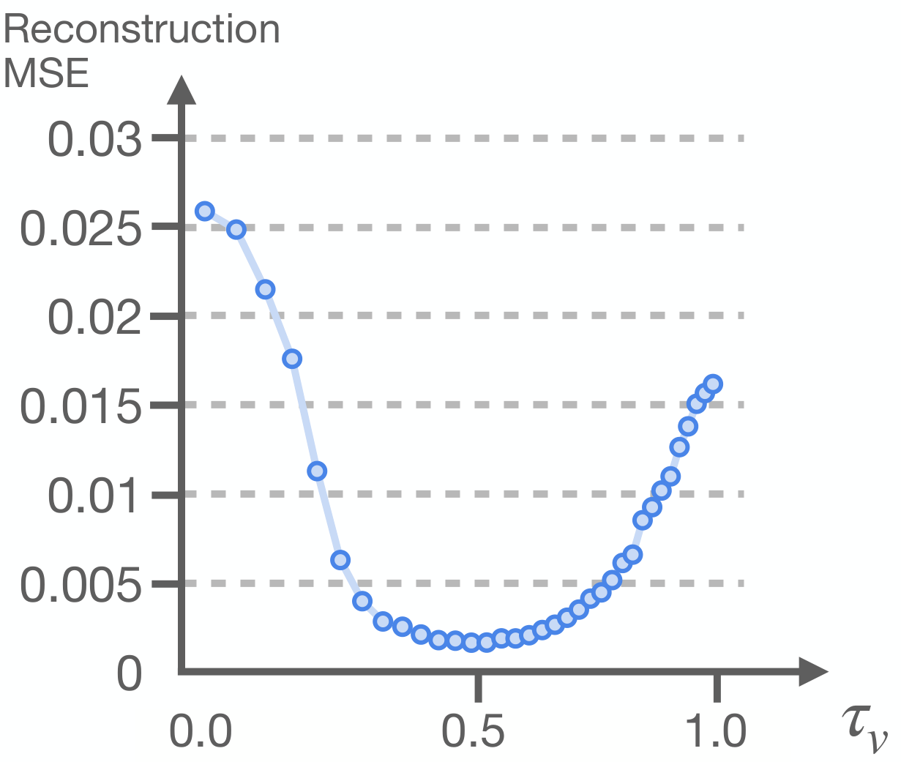

mimic-video: Video-Action Models for Generalizable Robot Control Beyond VLAs
1. Quick overview of the paper
| Reading positioning | content |
|---|---|
| What should the paper solve? | Mainstream VLA relies on static image and text pre-training and has strong semantic knowledge, but physical dynamics, temporal causality and operation processes still need to be learned from expensive robot demonstrations. What the paper wants to solve is: how to use the dynamic prior in video pre-training directly for robot control and reduce the demand for action data. |
| The author's approach | Use a flow matching video model such as Cosmos-Predict2 as the frozen video backbone, and obtain the noisy latent visual plan through partial denoising; the action decoder is used as the Inverse Dynamics Model, cross-attend to the middle layer representation of the video model, and output the action chunk. |
| most important results | SIMPLER-Bridge average success rate: mimic-video scratch is 46.9%, higher than $\pi_{0.5}$-style VLA scratch's 35.4%; task-specific $\tau_v$ is 56.3% after tuning. LIBERO averages 93.9%, which is higher than $\pi_{0.5}$-style VLA's 85.9%. On the real dual-arm dexterity hand, the Packing is 72.0 and the Package handover is 93.0, which are both higher than the 42.6 and 74.1 of the multi-view DiT-Block Policy. |
| Things to note when reading | This article is different from the previous method of "generating the future video completely first and then solving the action from the pixels". The focus is on partial denoising and intermediate hidden states; the author even found that the best strategy performance often occurs near high noise $\tau_v=1$, which means that high-fidelity video reconstruction is not a necessary condition. |
Core contribution list
- Propose Video-Action Model (VAM): Couple the pre-trained video model with the flow matching action decoder. The video model is responsible for dynamic/visual planning, and the action head is responsible for low-level control.
- Propose efficient action sampling: Stop in the middle of flow time $\tau_v$ by partial denoising to avoid completely generating future videos at each control step.
- Compare equivalent action headers with VLA: $\pi_{0.5}$-style baseline uses PaliGemma 3B and the same motion decoder, trying to attribute the difference to video representation vs. graphic representation.
- Give data efficiency conclusions: On LIBERO, the action decoder under video prior conditions can achieve the highest success rate of VLM-conditioned decoder with 10% of the data; it still has an average success rate of 77% at 1 episode/task.

2. Background and problem setting
2.1 Bottleneck of VLA
VLA transfers the semantic knowledge of VLM to robot control. The advantage is that it can understand language, objects and environmental concepts; however, the pre-training data of VLM is mainly static graphics and text, lacking the time information of "what changes caused by the action". Therefore, real physical dynamics, contact, deformation, and long-range programmed operations still need to be learned from the teaching trajectory during robot post-training.
The author believes that this brings an unsustainable data burden: if the backbone is "blind" to physical cause and effect, subsequent action data must bear three things: semantics, dynamics, and control. The goal of mimic-video is to hand over dynamic and visual action planning to the video backbone, and the action decoder only converts latent plan to motor command.
2.2 Why is the video not completely generated?
Existing video policy methods often learn the joint distribution of videos and actions, or first synthesize future pixels and then obtain actions through tracking/IDM. The problem is that full video synthesis is expensive at every control step and may have future artifacts at the pixel level, introducing out-of-distribution input to motion decoding. The approach of this article is to directly use the intermediate representation of the video model, especially the latent state after partial denoising.
2.3 Author's core assumptions
If the video model has learned "how the task will unfold visually", then the action decoder does not need to model complex future distributions and only needs to do inverse dynamics: given the current proprioception and visual plan, translate it into a low-level action sequence. The author calls this modeling Video-Action Model.
3. Related work context
| Technical line | Paper positioning | Differences in this article |
|---|---|---|
| Imitation Learning | Diffusion Policy, flow matching decoder, $\pi_0/\pi_{0.5}$, etc. use a generative framework to model multi-modal action distribution. | mimic-video inherits the flow matching action decoder, but replaces the conditional representation with the video model latent plan. |
| Vision-Language-Action Models | RT-2, OpenVLA, and $\pi_0$ series rely on image and text pre-training semantic transfer. | The author believes that VLA's static image and text pre-training lacks physical dynamics. This article uses video pre-training to fill this gap. |
| Video Models for Policy Learning | Dreamitate, Video Policy, world model, etc. use video prediction to assist control or planning. | This paper does not rely on full pixel reconstruction, nor does it use heuristic tracking, but samples the marginal action distribution from the middle noisy video latents. |
4. Method details
4.1 Case Study: Control difficulties are split into "predicting the future" and "executing the future"
The author first does an oracle study: the action decoder conditional input can be predicted video latents, or the oracle latents of ground-truth future video; the video backbone can be a standard pre-trained model, or a model fine-tuned from the robot video. The results show that the success rate is close to perfect when using oracle latents, regardless of whether the backbone is finetune or not. This supports a key judgment: once the future vision plan is correct, low-level action decoding is relatively simple; the difficulty mainly shifts to video model pre-training and video domain adaptation.

4.2 Flow Matching Basics
Flow matching learns the path between clean data and Gaussian noise into a vector field, and integrates the noise back into the data during sampling.
$$ x^\tau=(1-\tau)x^0+\tau\varepsilon, \quad \tau\in[0, 1] $$$\tau=0$ is clean data, and $\tau=1$ is pure noise. The conditional vector field is:
$$ u_\tau(x^\tau\mid x^0)=\frac{d}{d\tau}x^\tau=\varepsilon-x^0 $$Model $v_\theta$ is trained by regressing this vector field:
$$ \mathcal{L}_{\mathrm{CFM}}= \mathbb{E}\left\|v_\theta(x^\tau, \tau)-u_\tau(x^\tau\mid x^0)\right\|^2 $$When sampling, integrate from $\tau=1$ to $\tau=0$. This article uses the continuous time parameter $\tau$, deliberately not walking the entire path, but stopping at $\tau_v$ in the middle, forming partial denoising.
4.3 Model structure
The strategy goal is to predict action chunk $\mathbf{A}_t=[\mathbf{a}_t, \dots, \mathbf{a}_{t+H_a-1}]$, and the conditions include multiple RGB images, language instructions $l$ and proprioceptive state $\mathbf{q}_t$. The model consists of two flow matching modules:
Where $\mathbf{h}^{\tau_v}=v_\phi^{(k)}(\cdot)$ is the hidden states of layer $k$ of the video model, and the action decoder uses these representations through cross-attention.
The video model example is Cosmos-Predict2, an open source 2B latent Diffusion Transformer that uses a 3D-tokenizer to encode video frames. The input includes 5 frames of clean context prefix and noisy future latent patches; each transformer layer contains full-sequence self-attention, cross-attention for T5 language instructions, and two layers of MLP.
The action decoder is also DiT: use MLP to encode proprioception and future action tokens respectively, and add learned absolute positional encodings after being put into a sequence. Each layer contains cross-attention, action sequence self-attention and MLP on the intermediate representation of the video; the module output is modulated by AdaLN, and the AdaLN input contains low-rank bilinear-affine encoding of $\tau_v$ and $\tau_a$.

4.4 Action Sampling
During inference, future video noise and action noise are first sampled. The video stream is integrated from $\tau=1$ to the specified $\tau_v$ to obtain a partially denoised future latent; then the $k$ layer in front of the video model is taken to represent $\mathbf{h}^{\tau_v}$, and the action decoder is fully integrated from $\tau_a=1$ to 0, and a clean action chunk is output.
4.5 Training process
- Stage 1: Video backbone adaptation.Use LoRA to finetune a video model on robot video data to adapt it to the target visual domain and robot dynamics while maintaining pre-trained temporal inference capabilities.
- Stage 2: Action decoder training.Freeze the video backbone and train $\pi_\theta$ from scratch to return to the action flow field. The condition is to freeze the $\mathbf{h}^{\tau_v}$ provided by the backbone.
- Independently sample flow times.$\tau_v$ and $\tau_a$ are sampled simultaneously during each training. The video side $\mathcal{T}_v$ uses the logit-normal that matches the video pre-training, and the action side $\mathcal{T}_a(\tau_a)\propto\sqrt{\tau_a-0.001}$.
5. Experiments and results
5.1 Assessment setup
- SIMPLER-Bridge: Test task generalization under realistic visual field shifts using a Widow-X embodiment trained with BridgeDataV2.
- LIBERO: Focusing on LIBERO-Goal, Object, and Spatial, each suite has 10 tasks and 50 expert demos per task for precise multi-task desktop operations.
- Real arms and dexterous hands: Two Franka Panda arms are equipped with 16-DoF mimic humanoid hands. Observation includes workspace view, 4 wrist cameras and proprioception; evaluation of Package Sorting and Tape Stowing related tasks. The action decoder has very little task data: 1h33m/512 episodes for sorting and 2h14m/480 episodes for stowing; the video backbone is finetune on a wider 200-hour corpus.
5.2 SIMPLER-Bridge main results
| model | Put Carrot on Plate | Put Spoon on Towel | Stack Blocks | Eggplant | Average SR |
|---|---|---|---|---|---|
| OpenVLA finetuned | 4.2 | 8.3 | 0.0 | 45.8 | 14.6 |
| Octo finetuned | 8.3 | 12.5 | 0.0 | 43.1 | 16.0 |
| ThinkAct pretrained | 37.5 | 58.3 | 8.7 | 70.8 | 43.8 |
| FLOWER finetuned | 13.0 | 71.0 | 8.0 | 88.0 | 45.0 |
| $\pi_{0.5}$-style VLA scratch | 25.0 | 29.2 | 20.8 | 66.7 | 35.4 |
| mimic-video scratch | 37.5 | 37.5 | 12.5 | 100.0 | 46.9 |
| mimic-video scratch, per-task $\tau_v$ tuning | 54.2 | 41.7 | 29.2 | 100.0 | 56.3 |
The key comparison here is scratch vs scratch: mimic-video and $\pi_{0.5}$-style VLA use equivalent action decoder and the same target data conditions, but the former is represented by a video backbone, and the average success rate is 11.5 percentage points higher. The per-task $\tau_v$ tuning further pushed the average to 56.3.
5.3 LIBERO main results
| model | Spatial | Object | Goal | Avg |
|---|---|---|---|---|
| Diffusion Policy scratch | 78.3 | 92.5 | 68.3 | 79.7 |
| Octo finetuned | 78.9 | 85.7 | 84.6 | 83.1 |
| DiT Policy finetuned | 84.2 | 96.3 | 85.4 | 88.6 |
| OpenVLA finetuned | 84.7 | 88.4 | 79.2 | 84.1 |
| OpenVLA-OFT finetuned | 96.2 | 98.3 | 96.2 | 96.9 |
| $\pi_{0.5}$-style VLA scratch | 79.2 | 94.0 | 84.4 | 85.9 |
| mimic-video scratch | 94.2 | 96.8 | 90.6 | 93.9 |
mimic-video scratch exceeds most finetuned generalist baselines and is only lower than OpenVLA-OFT finetuned's 96.9. Compared with $\pi_{0.5}$-style VLA scratch, the average improvement is 8.0 percentage points, and the Spatial suite has the largest improvement.
5.4 Real dual-arm dexterity results
| model | Packing | Package handover |
|---|---|---|
| DiT-Block Policy | 11.0 | 30.0 |
| DiT-Block Policy + wrist cams | 42.6 | 74.1 |
| mimic-video | 72.0 | 93.0 |
The reading of this result is important: mimic-video is only conditional on a single workspace camera view, but exceeds the DiT-Block Policy that adds wrist cams. The author explains that the prior prediction ability of video generation can bridge the visual uncertainty caused by grasping occlusion to a certain extent.

5.5 Data efficiency and convergence speed
The author changes the action decoder training data size on LIBERO-Goal, Spatial, and Object. The results show that the mimic-video action decoder can achieve the highest success rate of the VLM-conditioned decoder using only 10% of the training data; even if each task only uses 1 episode, which is equivalent to reducing 98% of the action data, it still has an average success rate of 77%, which is close to the Diffusion Policy baseline.


5.6 Video fidelity and motion performance trade-offs
The author scans $\tau_v\in[0, 1]$ to study whether complete video reconstruction is necessary. Intuitively, lower $\tau_v$ represents a more complete and higher-fidelity video latent, which should be better; but in the SIMPLER experiment, the best autonomous policy performance appeared at the highest flow time $\tau_v=1$. This shows that the action decoder does not need a completely denoised video, only a useful enough intermediate representation.

In order to isolate video generation errors, the author also used noisy ground-truth video latents as a sweep to measure the action reconstruction MSE on BridgeDataV2. The lowest MSE occurs at $\tau_v\approx0.4$, while the error increases as one approaches full reconstruction at $\tau_v=0$. The paper attributes this to the information form of the intermediate hidden states: when close to the clean target, the model layer may tend to approximate identity mapping, but have less information for downstream actions.

6. Key points of reproducibility and implementation
6.1 Training hyperparameters
| hyperparameters | Video finetuning: BridgeDataV2 | LIBERO | mimic | Action decoder: BridgeDataV2 | LIBERO | mimic |
|---|---|---|---|---|---|---|
| Learning Rate | 1.778e-4 | 1e-4 | ||||
| Warmup Steps | 1000 | |||||
| Training Steps | 70043 | 7k-8k | 27300 | 14112 | 50k | 26k |
| LR Scheduler | Constant | Linear | ||||
| Weight Decay | 0.1 | |||||
| Gradient Clip | 10.0 | |||||
| Batch Size | 256 | 128 | 32 | 256 | 128 | 128 |
| Optimizer | AdamW | |||||
6.2 Data preprocessing
- General: All orientations are represented as 6D vectors corresponding to the first two rows of the rotation matrix; images are extracted or rendered at 480×640 resolution.
- BridgeDataV2: Observation is the absolute end pose and continuous gripper joint state; Action is the future end pose, representing the entire action chunk relative to the proprioceptive pose, and continuous gripper actions. The author removes 3046 non-informative language labels and deletes the first state and null-action of each episode.
- LIBERO: Observation is the absolute end pose and continuous gripper joint state; Action is the end action and binary gripper action relative to the proprioceptive pose. The author follows the OpenVLA-OFT process to remove replay failed episodes.
- mimic: Observation includes the absolute end pose, continuous hand joint states, relative poses of the actuators at both ends, the end and hand actions at the previous moment; Action is the end pose action and absolute hand joints action relative to the proprioceptive pose.
6.3 Empirical conclusions in the appendix
- Video model source layer $k$: The middle layer $k=19$ brings the strongest strategy performance, and the success rate decreases significantly when approaching the initial layer or the final layer; the author believes that ideally this layer selection should be learnable.
- Video observation horizon $H_o$: Using 5 frames of historical observations is better than using only the current 1 frame.
- $\pi_{0.5}$-style VLA baseline: The cross-attend on SIMPLER-Bridge to the 11th layer of FAST-pretrained VLM is the best; the decoder does not improve significantly after continuing to train for 2-3 epochs.
6.4 The easiest points to step on when reproducing experiments
- Do not unfreeze the video backbone to train on motion data. The key design of the paper is to freeze the backbone after LoRA video finetuning, and then train the action decoder.
- $\tau_v$ is an inference hyperparameter, which is not fixed and must be completely denoised. The default $\tau_v=1$ may be the fastest and the best on average.
- When comparing VLA baselines, the action decoder architecture should be consistent, otherwise it is impossible to tell whether the improvement comes from video representation or decoder capacity.
7. Analysis, Limitations and Boundaries
7.1 The most valuable part of this paper
The most valuable part is that it does not just say "the video model has a physical prior", but turns this prior into a controllable variable: the same flow matching action decoder is conditioned on the video backbone representation and the VLM backbone representation respectively, and then compares the sample efficiency, convergence speed and success rate. Coupled with the oracle latent case study and $\tau_v$ sweep, the paper breaks down the core mechanism of VAM more clearly: the performance does not come from complete pixel generation, but from the encoding of dynamic and visual plans by the video model intermediate representation.
7.2 Why the results hold up
- Comparative design is cleaner: $\pi_{0.5}$-style VLA baseline uses PaliGemma 3B and the same action decoder as mimic-video, and is trained under equivalent data conditions, so that the difference is more concentrated on the conditioning representation.
- The tasks cover a variety of tasks: The results cover the three suites of SIMPLER-Bridge and LIBERO, as well as the high-dimensional contact task of real dual-arm dexterous hands.
- Mechanism experiment directly: The near perfect success of oracle future video latents shows that action decoding can indeed be supported by video plan representation; the data efficiency curve shows that 10% of the data reaches the highest success rate of VLA decoder; $\tau_v$ and MSE analysis explain why partial/noisy denoising can be better than full reconstruction.
- The appendix gives implementation details: Hyperparameters, data preprocessing, source layer, observation horizon and VLA baseline parameter adjustment experience are all listed to facilitate the determination of recurrence boundaries.
7.3 Limitations clearly stated by the author
- Single-view video backbone: Currently relies on single-view video backbone, limiting the strategy to a fixed single workspace view. The authors believe that native multi-view video architecture may improve spatial reasoning and occlusion robustness.
- A unified cross-embodiment large model has not yet been formed: The paper does not extend the VAM recipe to a unified large-scale cross-embodiment model, and the author believes that this step is the key to unlocking the generalization ability of the video foundation model.
- Real mission scope is limited: The real world only covers a focused set of dual-arm dexterity tasks; a wider range of operational behaviors needs to be expanded.
- $\tau_v$ is still a sensitive inference hyperparameter: Although $\tau_v=1$ is a good default, the authors also report that task-optimized $\tau_v$ can further improve the average SIMPLER success rate, indicating that actual deployments may still require task-level tuning.
7.4 Applicable boundaries
Judging from the evidence in the paper, mimic-video is suitable for robot operation settings where visual dynamics can express task intentions but action data is scarce, especially tasks that require generalization to visual domain shifts or heavy occlusions. It is currently not equivalent to the universal robot foundation policy: single perspective, non-uniform cross-embodiment, limited scope of real tasks, and still limits direct extrapolation.
7.5 Group meeting reading reminder
- Prioritize understanding of $\tau_v$: it determines the video stream to stop in a noisy latent plan. The counter-intuitive point of the paper is that high-fidelity reconstruction does not equal a good strategy.
- Take a look at Figure 2 and Figure 7/8 together: the former illustrates that "actions are easy to decode when the future visual plan is good enough", and the latter illustrates that "the complete future predicted by the model may not be the best condition".
- When reading the main results, distinguish between scratch, finetuned, and pretrained data systems; the most powerful comparison in the paper is between mimic-video scratch and $\pi_{0.5}$-style VLA scratch.